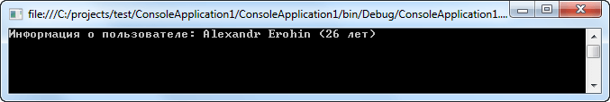

| Тема 7. Операторы преобразования. | ||
| Назад | ||
|
Иногда объект определенного класса требуется использовать в выражении, включающем в себя данные других типов. В одних случаях для этой цели оказывается пригодной перегрузка одного или более операторов, а в других случаях — обыкновенное преобразование типа класса в целевой тип. Для подобных ситуаций в C# предусмотрена специальная разновидность операторного метода, называемая оператором преобразования. Такой оператор преобразует объект исходного класса в другой тип. Операторы преобразования помогают полностью интегрировать типы классов в среду программирования на C#, разрешая свободно пользоваться классами вместе с другими типами данных, при условии, что определен порядок преобразования в эти типы. Существуют две формы операторов преобразования: явная и неявная. Ниже они представлены в общем виде:
public static explicit operator целевой_тип(исходный_тип v) {return значение;}
public static implicit operator целевой_тип(исходный_тип v) {return значение; }
где целевой_тип обозначает тот тип, в который выполняется преобразование; исходный_тип — тот тип, который преобразуется; значение — конкретное значение, приобретаемое классом после преобразования. Операторы преобразования возвращают данные, имеющие целевой_тип, причем указывать другие возвращаемые типы данных не разрешается. Если оператор преобразования указан в неявной форме (implicit), то преобразование вызывается автоматически, например, в том случае, когда объект используется в выражении вместе со значением целевого типа. Если же оператор преобразования указан в явной форме (explicit), то преобразование вызывается в том случае, когда выполняется приведение типов. Для одних и тех же исходных и целевых типов данных нельзя указывать оператор преобразования одновременно в явной и неявной форме. using System; using System.Collections.Generic; using System.Linq; using System.Text; namespace ConsoleApplication1 { class UserInfo { public string Name, Family; public byte Age; public UserInfo(string Name, string Family, byte Age) { this.Name = Name; this.Family = Family; this.Age = Age; } // Явное преобразование типа UserInfo к string public static explicit operator string(UserInfo obj) { return "Информация о пользователе: " + obj.Name + " " + obj.Family + " (" +obj.Age+" лет)"; } } class Program { static void Main(string[] args) { UserInfo ui1 = new UserInfo(Name: "Alexandr", Family: "Erohin", Age: 26); string s = (string)ui1; Console.WriteLine(s); Console.ReadLine(); } } } Перегрузка операторов преобразования C#  Оператор неявного преобразования применяется автоматически в следующих случаях: когда в выражении требуется преобразование типов; методу передается объект; осуществляется присваивание и производится явное приведение к целевому типу. С другой стороны, можно создать оператор явного преобразования, вызываемый только тогда, когда производится явное приведение типов. В таком случае оператор явного преобразования не вызывается автоматически, как показано в примере. На операторы преобразования накладывается ряд следующих ограничений: Исходный или целевой тип преобразования должен относиться к классу, для которого объявлено данное преобразование. В частности, нельзя переопределить преобразование в тип int, если оно первоначально указано как преобразование в тип double. Нельзя указывать преобразование в класс object или же из этого класса. Для одних и тех же исходных и целевых типов данных нельзя указывать одновременно явное и неявное преобразование. Нельзя указывать преобразование базового класса в производный класс. Нельзя указывать преобразование в интерфейс или же из него. Помимо указанных выше ограничений, имеется ряд рекомендаций, которыми обычно руководствуются при выборе операторов явного или неявного преобразования. Несмотря на все преимущества неявных преобразований, к ним следует прибегать только в тех случаях, когда преобразованию не свойственны ошибки. Во избежание подобных ошибок неявные преобразования должны быть организованы только в том случае, если удовлетворяются следующие условия. Во-первых, информация не теряется, например, в результате усечения, переполнения или потери знака. И во-вторых, преобразование не приводит к исключительной ситуации. Если же неявное преобразование не удовлетворяет этим двум условиям, то следует выбрать явное преобразование. | ||
| Конспект подготовлен Бакулиным А. М. 2022 год. | ||